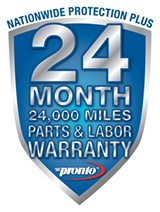

Staying on top of maintenance can help your vehicle run more smoothly and efficiently, so it is important to keep up with your vehicle’s maintenance schedule. Changing your oil at regular intervals is important, but it isn’t the only item on your vehicle maintenance schedule. Following your manufacturer’s mileage recommendation is key to extending the life of your vehicle because you can catch a small problem before it becomes asmajor problem..
Harvey’s offers all of the auto maintenance services you need to keep your vehicle in good condition so that it will last longer and run better. Our maintenance services include:
Normal wear-and-tear of your vehicle can lead to an unexpected repair need. As soon as you notice any issues with your vehicle’s performance, bring it to Harvey’s for an accurate diagnosis and efficient repairs. Your family's safety while on the road is our main priority so we always have the best interests of our customers in mind. We pride ourselves on providing exceptional and honest work ensuring that your vehicle will be performing at its best when leaving our shop.
We proudly back our services with  warranty, so you can be as confident in our work as we are.
Our repair services include: